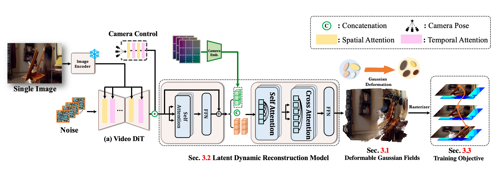

We introduce Diff4Splat, a feed-forward framework for controllable 4D scene generation from a single image. Our method synergizes the powerful generative priors of video diffusion models with geometric and motion constraints learned from a large-scale 4D dataset. Given a single image, camera trajectory, and optional text prompt, our model directly predicts a complete, dynamic 4D scene represented by deformable 3D Gaussian Splats. This approach captures appearance, geometry, and motion in a single pass, eliminating the need for test-time optimization or post-hoc processing. At the core of our framework is a video latent transformer that enhances existing video diffusion models, enabling them to jointly model spatio-temporal dependencies and predict 3D Gaussian Splats over time. Supervised by objectives targeting appearance fidelity, geometric accuracy, and motion consistency, Diff4Splat achieves performance comparable to state-of-the-art optimization-based methods for dynamic scene synthesis while being significantly more efficient.

The network architecture of Diff4Splat. We present a high-fidelity 4D scene generation method from single images through four key innovations: video diffusion latents processed by our novel Transformer enabling dynamic 3DGS deformation, unified supervision with photometric, geometric, and motion losses, and progressive training for robust geometry and texture.
| Input Image | Ours (feed-forward) | MoSca (test-time optimization) |
 |
||
 |
||
 |
||
 |
If you find our work helpful, please consider citing:
@misc{pan2025diff4splatcontrollable4dscene,
title={Diff4Splat: Controllable 4D Scene Generation with Latent Dynamic Reconstruction Models},
author={Panwang Pan and Chenguo Lin and Jingjing Zhao and Chenxin Li and Yuchen Lin and Haopeng Li and Honglei Yan and Kairun Wen and Yunlong Lin and Yixuan Yuan and Yadong Mu},
year={2025},
eprint={2511.00503},
archivePrefix={arXiv},
primaryClass={cs.CV},
url={https://arxiv.org/abs/2511.00503},
}